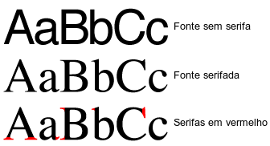
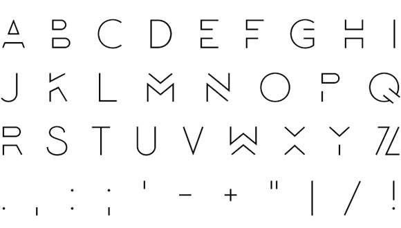
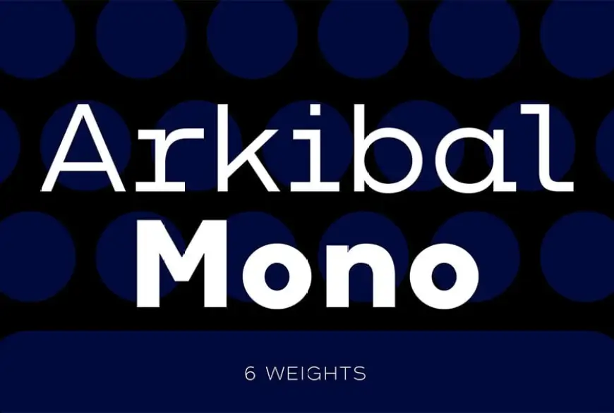
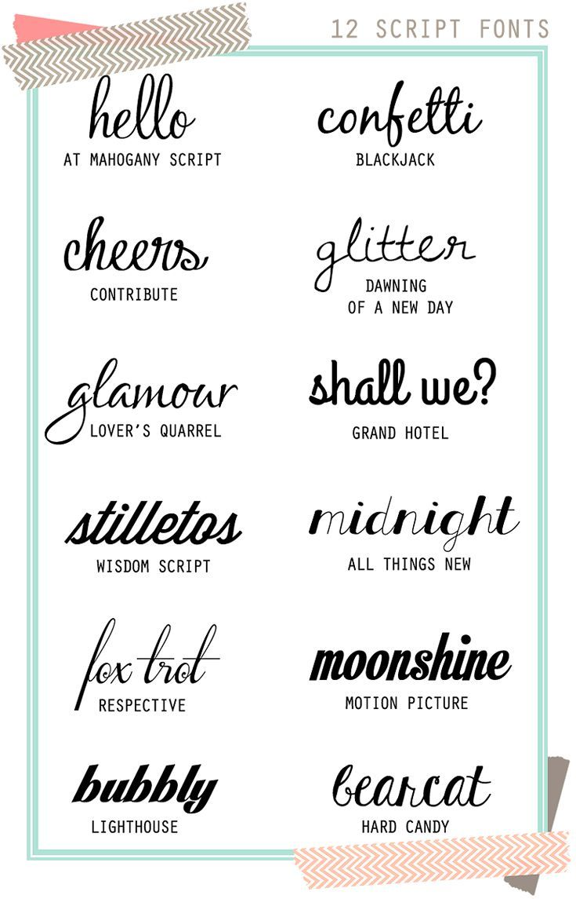

Glifos
Glifos são representações gráficas de caracteres em um sistema de escrita. Eles incluem letras, números, pontuações e outros símbolos. A escolha de glifos influencia diretamente a personalidade e a legibilidade de uma fonte.
Anatomia das Fontes
A anatomia das fontes inclui elementos como:
- Altura-x: A altura das letras minúsculas, como "x".
- Ascendente: Parte das letras que ultrapassa a altura-x, como em "h" ou "b".
- Descendente: Parte das letras que se estende abaixo da linha base, como em "p" ou "q".
Categorias de Fontes
Fontes Serifadas
Exemplo de fonte serifada: Merriweather
Fontes serifadas têm pequenas linhas ou traços anexados às extremidades das letras. São ideais para textos longos e impressos.
Fontes Sans-serif
Exemplo de fonte sans-serif: Roboto
Fontes sans-serif não possuem serifas, o que dá um aspecto mais moderno e limpo. São amplamente utilizadas em textos digitais.
Fontes Monoespaçadas
Exemplo de fonte monoespaçada: Courier New
Fontes monoespaçadas têm o mesmo espaçamento entre cada caractere. São comuns em programação e design técnico.
Fontes Script
Exemplo de fonte script: Pacifico
Fontes script imitam a escrita manual, oferecendo um toque elegante e informal. São frequentemente usadas em convites e marcas.
Fontes Display
Exemplo de fonte display: Lobster
Fontes display são altamente decorativas e usadas para criar impacto em títulos e designs chamativos.

Comparativo: Fontes Serifadas vs Sans-serif
| Tipo de Fonte | Exemplo | Características |
|---|---|---|
| Serifada | Merriweather | Indicada para textos longos, transmite seriedade e tradição. |
| Sans-serif | Roboto | Limpa e moderna, ideal para interfaces digitais e títulos. |